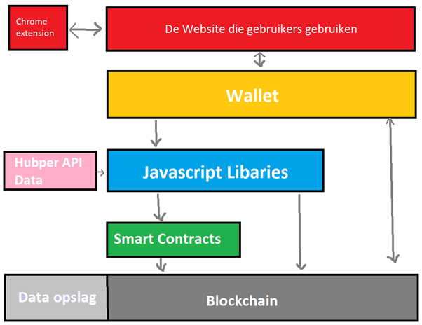

Welke technologieën komen kijken bij een web 3.0 applicaties?
Nu er is gevormd hoe de Learn To Earn van Handpicked eruit moet komen te zien, is het belangrijk om te weten hoe een Learn To Earn technisch in elkaar zit. Voor het uiteindelijke advies document komt er ook de informatie bij hoe de blockchain technologie eruitziet en hoe dit geprogrammeerd zou moeten worden in de Learn To Earn backend. In dit onderzoek wordt er gekeken naar verschillende blockchain technologieën die bij een “To Earn” model worden toegepast. Hierdoor kan geconcludeerd worden welke blockchain technologieën worden toegepast op het Learn To Earn product.
Ook wordt hier onderzocht welke soorten smart contracts en crypto tokens er zijn binnen de “To Earn” wereld. Zodat geconcludeerd kan worden welke relevant zijn voor de Handpicked Learn To Earn app.
Tot slot zal dit onderzoek analyseren welke blockchain technologieën komen kijken bij “To Earn” programma’s en welke smart contracts en tokens zij gebruiken. Hierdoor kan geconcludeerd worden welke van deze technologieën, smart contracts en tokens gebruikt kunnen worden voor de Handpicked Learn To Earn.
Door in dit proces de bovenstaande kennis te gebruiken en te oefenen met de programmeertechnieken, kan er vervolgens het concept worden uitgewerkt in een UML-klassendiagram. Door het hele programma uit te schetsen, kan de essentie worden bepaald van de applicatie. Dit kan vervolgens in een prototype worden geprogrammeerd om dat als voorbeeld te tonen voor het technische advies.
Om kennis te vormen over web 3.0 technologieën zijn er verschillende LinkedIn-cursussen gevolgd om ontwikkeling van DApp’s te begrijpen en te oefenen. Ook zijn er verschillende YouTube video’s en blogs geanalyseerd om kennis te maken met verschillende web 3.0 technieken, om te kijken welke relevant kunnen zijn voor het ontwikkelen van het concept.
De code die wordt geprogrammeerd tijdens het volgen van de LinkedIn-cursussen zijn om te oefenen hoe een DApp algemeen in elkaar zit. Hoe werkt de ReactJS library met de andere librarys. Als dit mogelijk is kunnen de andere elementen eraan worden toegevoegd.
Lees in dit document voor het uitgebreide onderzoek en conclusie met de bijhorende bronnen. De belangrijkste resultaten uit het onderzoek waren:
De Hubper API-data wordt omgezet naar afbeeldingen en tokens, dit wordt gedaan binnen javascript. Vervolgens wordt deze data omgezet in smart contracts, die zetten in dan op de blockchain waar het wordt opgeslagen. De wallet kan dan vervolgens deze data van de blockchain ophalen en dit op de website laten zien aan de gebruiken. Tot slot krijgt de Chrome extensie de data te zien van de website. (Hieronder een DApp Stack visualisatie van de beschrijving)
Met deze resultaten kon vervolgens er een UML-klassendiagram worden gemaakt. Hiermee is de hele backend en front-end geschetst van hoe het programma er potentieel uit zou kunnen zien.
Link naar UML:https://www.figma.com/file/ubX01w59W5IxCHUwk06evq/UML-DIAGRAM?node-id=0%3A1&t=GDxL2wDJ6CFoQiUa-1
Met de UML-diagram is duidelijk te zien dat de essentie van dit programma ligt bij de Hubper API data omzetten in NFT en Token data. Hiervoor moet dus een DApp komen die de Hubper API data (in de vorm van een json file omdat er geen toegang is naar de API) omzet in afbeeldingen, json files en tokens op de blockchain. Deze moeten dan vervolgens weer getoond worden op een website. De vervolgstap is om een Hubper Api data naar NFT en token converter te maken.